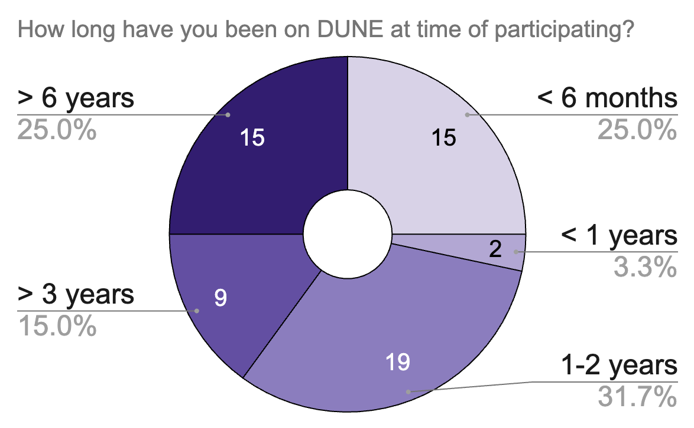
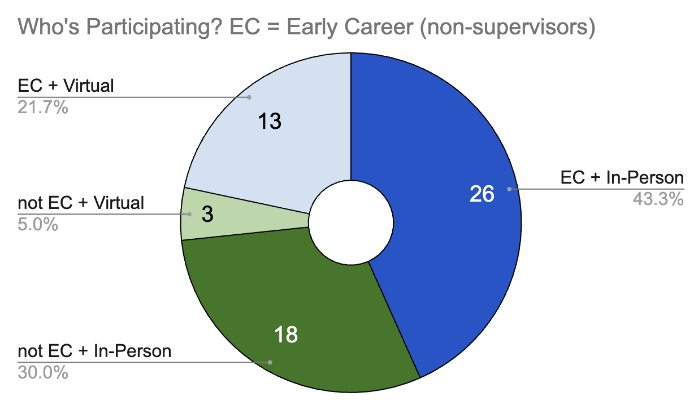
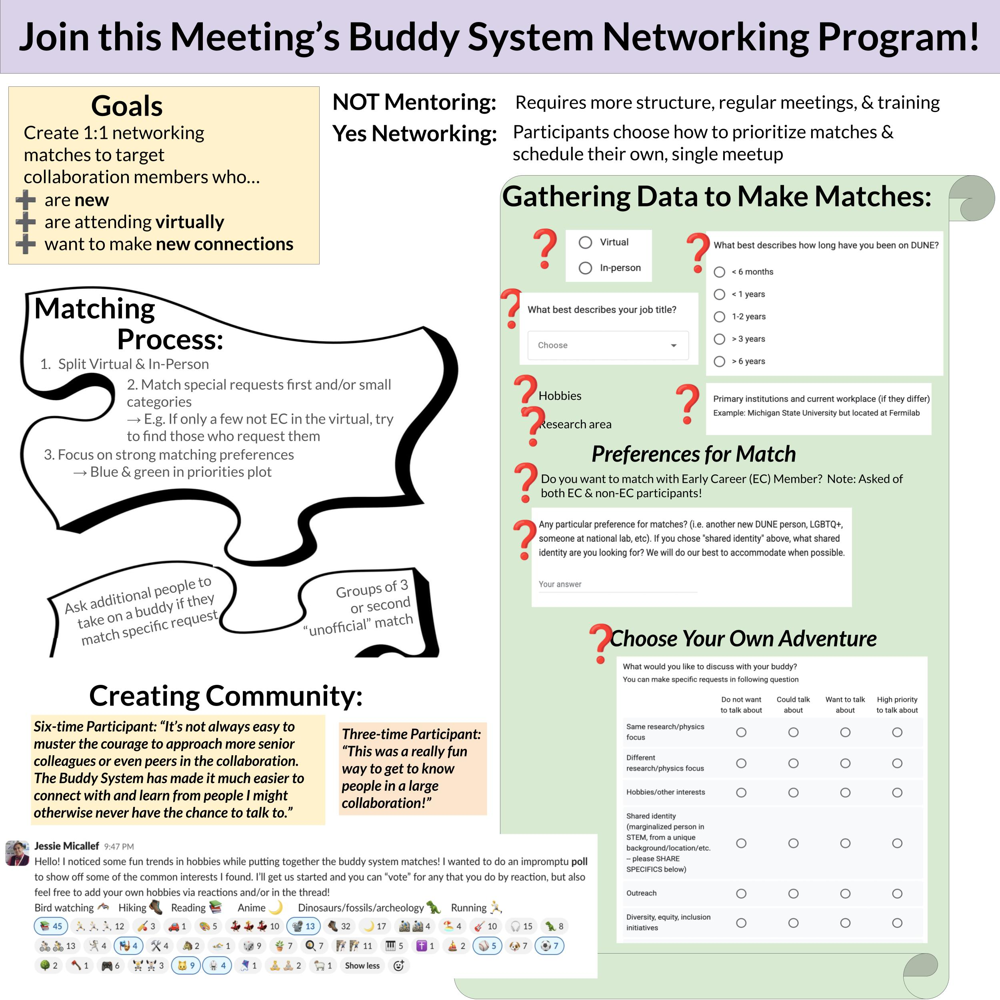

Buddy System Program
The Buddy System Program is a networking program that was developed for large conference or collaboration meetings. It has been applied to the DUNE experiment at their collaboration meeitngs, which hosts 300-500 attendees. The program is optional and aims to match attendees who opt-in with another participant, based on their preferences communitcated through a survey.
The goal is to create one-on-one networking matches for participants who...
- Are first-time attendees at the meetings
- (and/or) Are attending virtually, to still make at least one connection during the meeting week
- (and/or) Seasoned attendees who ant to make connections outside their usual circle


About the Matching

Adopt the Buddy System for your Meeting!
People are more than welcome to use the Buddy System Program for their own conference or meeting! There are examples of documentations available in the Buddy System Google Drive!
- Example of survey to faciliate matching
- Example of post-program survey to gather feedback
- Tips and tricks
- How to automate emailing in google sheets